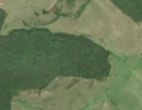
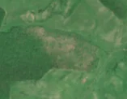

16,2 ha · Șoarș, com. Beclean
văzută schimbată prima dată pe 4 mai 2026


Nu am găsit nicio autorizație de tăiere în jur.
Terenul: o parte în pădure de stat, o parte privată sau fără amenajament publicat.
Ce se vede în poze: În poza detaliată și în «înainte» zona marcată este o pădure deasă, închisă la culoare. În «după» apar pete deschise, roz-cenușii, printre porțiuni încă verzi, în timp ce pădurea din jur rămâne verde. Pare o pădure rărită sau afectată parțial, nu o tăiere completă.
în arie protejată: Podișul Hârtibaciului